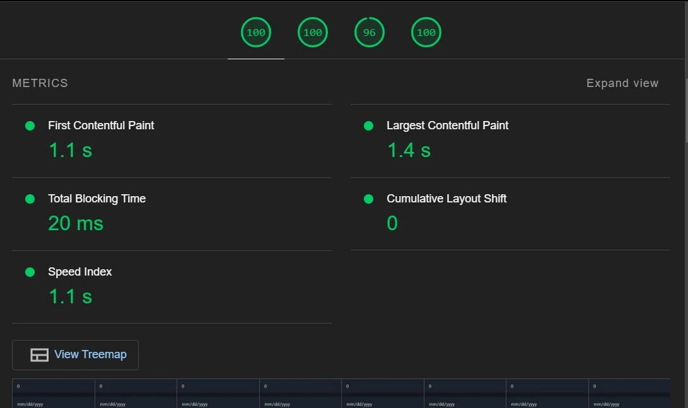

My journey into web development began with a simple curiosity about how websites and web applications work. I wanted to create interactive, user-friendly experiences and understand the technology of the websites. Learning web development allows me to bring my ideas to life, solve real-world problems, and collaborate with a community of developers. This blog documents my journey from understanding the basics of the MVC framework to exploring modern frontend frameworks that make building dynamic web applications more efficient.
What is MVC?
The Model-View-Controller (MVC) framework is an architectural pattern that separates an application into three main logical components Model, View, and Controller.
The MVC framework includes the following 3 components:
Model:
The Model represents the application's data and the business logic. It is responsible for directly managing the data, logic, and rules of the application.
View
: The View is responsible for rendering the user interface and presenting data to the user. It displays the data from the Model to the user and sends user commands to the Controller.
Controller
: The Controller listens to the user inputs from the View, processes them and returns the results to the View.
In MVC, we often have to manually update the DOM (Document Object Model) to reflect changes in the application state. This can lead to complex code, especially as the application grows in complexity.
In MVC separation, the Model, View, and Controller can become tightly coupled. The changes in one component can unintentionally affect the others, making the code harder to maintain and extend.
Views and Controllers often contain logic that is specific to a particular part of the application, making it hard to reuse code across different parts of the application.
The tight coupling and complexity of interactions between different components can make it harder to isolate and test individual units of the application.
Managing three separate components (Model, View, Controller) and their interactions can be difficult for new developers like me.
Knowing Git
Git is a version control system widely used for tracking changes in source code during software development. It allows multiple developers to work on a project simultaneously without overwriting each other's changes, facilitates collaboration, and helps manage project history.
Basic Git Commands
Initialization and Configuration:
git init: Initializes a new Git repository in the current directory.
git config --global user.name "Your Name": Sets your Git username.
git config --global user.email "you@example.com": Sets your Git email.
Cloning a Repository:
git clone : Creates a local copy of a remote repository.
Staging and Committing Changes:
git status: Displays the status of your working directory and staging area.
git add : Stages a specific file.
git add .: Stages all changes in the current directory.
git commit -m "Commit message": Commits staged changes with a descriptive message.
Branching and Merging:
git branch: Lists all branches in your repository
git branch : Creates a new branch.
git checkout : Switches to the specified branch.
git merge : Merges the specified branch into the current branch.
Viewing History and Differences:
git log: Shows the commit history.
git diff: Shows changes between the working directory and the staging area.
Push Commands
git remote add origin : Adds a remote repository and names it "origin".
git push origin : Pushes the specified branch to the remote repository named "origin".
git push -u origin : Pushes the specified branch and sets it up to track the remote branch, simplifying future pushes.
Service Worker is a feature, enabling developers to create more reliable web applications. They act as a proxy between the web application and the network, allowing for greater control over how network requests are handled. This includes capabilities such as caching assets for offline use, intercepting network requests, and providing seamless user experiences even when the network is unreliable.
Service workers run in the background, separate from the main browser thread, and do not have direct access to the DOM. They are event-driven and typically used for features like push notifications and background data synchronization.
IndexedDB is a way for you to persistently store data inside a user's browser. Because it lets you create web applications with rich query abilities regardless of network availability, your applications can work both online and offline.
Lighthouse is an open-source, automated tool developed by Google for improving the quality of web pages. It provides audits for performance, accessibility, progressive web apps, SEO.
Key Audits in Lighthouse
Performance: This audit measures how quickly a page loads and becomes interactive. Key metrics include:
First Contentful Paint (FCP): Time taken for the first piece of content to be.
Speed Index: How quickly the contents of a page are visibly populated.
Largest Contentful Paint (LCP): Time taken for the largest content element to become visible.
Time to Interactive (TTI): Time taken for the page to become fully interactive.
Total Blocking Time (TBT): Total time during which the main thread was blocked and unable to respond to user input.
Cumulative Layout Shift (CLS): Measure of visual stability and how much the page layout shifts unexpectedly.
Accessibility:
This audit checks the accessibility of the web page for users with disabilities
Best Practices:
This audit checks for common best practices in web development, such as:
HTTPS Usage,
No Vulnerable Libraries,
No Mixed Content
SEO:
This audit ensures the web page follows basic search engine optimization practices to be discoverable and rank well
Running Lighthouse
1. Open Chrome DevTools (F12 or right-click and select "Inspect").
2. Navigate to the "Lighthouse".
3. Select the desired categories (Performance, Accessibility, etc.).
4. Click "Generate Report".
As the web development continues to evolve, many frontend frameworks have emerged, each offering unique features and advantages to address the limitations of traditional MVC patterns.
Exploring these frameworks is essential for a developer aiming to build efficient, scalable, and maintainable web applications.
React is a widely-used library for building user interfaces. It emphasizes a component-based architecture, where the UI is broken down into reusable components. React's virtual DOM efficiently updates the view in response to state changes, minimizing direct DOM manipulation and enhancing performance. Its declarative syntax and strong community support make it a popular choice for complex, dynamic web applications.
Vue is a progressive framework for building user interfaces, designed to be incrementally adoptable. It offers a simple and approachable core library, along with a robust ecosystem of supporting libraries and tools. Vue's reactivity system and single-file components (combining HTML, CSS, and JavaScript) streamline development, making it an excellent choice for both small projects and large-scale applications.
Svelte takes a different approach compared to traditional frameworks. Instead of running in the browser, Svelte shifts much of the work to compile time, producing highly efficient JavaScript code that updates the DOM surgically. This results in faster runtime performance and smaller bundle sizes. Svelte's syntax is intuitive and easy to learn, making it an attractive option for developers seeking simplicity and performance.
SolidJS is a declarative UI library focused on fine-grained reactivity and efficient updates. It borrows ideas from both React and Svelte, offering a syntax similar to React but with the performance benefits of a compile-time framework like Svelte. SolidJS aims to provide a highly optimized development experience with minimal runtime overhead, making it ideal for building highly interactive applications.
React, Vue, Svelte, and SolidJS all use a component-based approach, allowing developers to build UIs using reusable and encapsulated components.
Reactive Programming
React, Vue, Svelte, and SolidJS support reactive programming, making it easier to manage state changes and automatically update the UI when the state changes.
Single File Components
Vue and Svelte both support single-file components, where HTML, CSS, and JavaScript/TypeScript are bundled together in a single file for better and ease of maintenance.
Declarative Syntax
React, Vue, Svelte, and SolidJS use declarative syntax to define user interfaces, making the code more readable and easier to understand.
Rendering Mechanism
React: Uses a virtual DOM to efficiently update the actual DOM in response to state changes.
Vue: Also uses a virtual DOM, but with a simpler reactivity system that makes it easier to understand and use.
Svelte: Compiles components into highly efficient imperative code that updates the DOM directly, bypassing the need for a virtual DOM.
SolidJS: Utilizes fine-grained reactivity to directly update the DOM without a virtual DOM, similar to Svelte but with a more React-like syntax.
Build Tools
Vite: A build tool that provides a fast and optimized development environment for modern web frameworks. It's not a framework itself but can be used with frameworks like React, Vue, and Svelte to enhance the development experience.
React: Typically used with build tools like Webpack or Create React App, but can also be integrated with Vite for faster development.
Vue: Can be used with Vue CLI, Webpack, or Vite for a streamlined development process.
Svelte: Uses its own build tool, SvelteKit, but can also be integrated with Vite for optimized builds.
SolidJS: Can be used with various build tools, including Vite, for an efficient development setup.
Performance
Vite:
React:
Vue:

Svelte:
SolidJS:
Each framework has its own unique strengths and use cases, making them suitable for different types of projects. React and Vue are versatile and widely adopted, offering robust ecosystems and flexibility. Svelte and SolidJS focus on performance and simplicity, providing a more streamlined development experience with highly optimized output. Vite enhances the development process for any of these frameworks by offering fast build times and an efficient development environment.
Conclusion
Out of all the frameworks mentioned above, i think svelte and vue frameworks are more convenient.Both Vue and Svelte offer unique advantages that make them appealing choices for modern web development.Vue’s comprehensive ecosystem, gentle learning curve, and flexible architecture make it ideal for both small projects and large-scale applications. Svelte’s performance optimizations, intuitive syntax, and compile-time reactivity offer a refreshing approach to building highly efficient web applications.
Finally, the choice of framework depends on specific project needs and developer preferences
Choosing React for a well-established ecosystem and robust community support.
Opt for Vue if its a progressive framework with great ease of integration and an approachable learning curve.
Consider Svelte for cutting-edge performance and simplicity, especially if its a start of a new project from scratch.
SolidJS for high performance and reactivity, its familiar with React's syntax and looking for more optimized rendering.